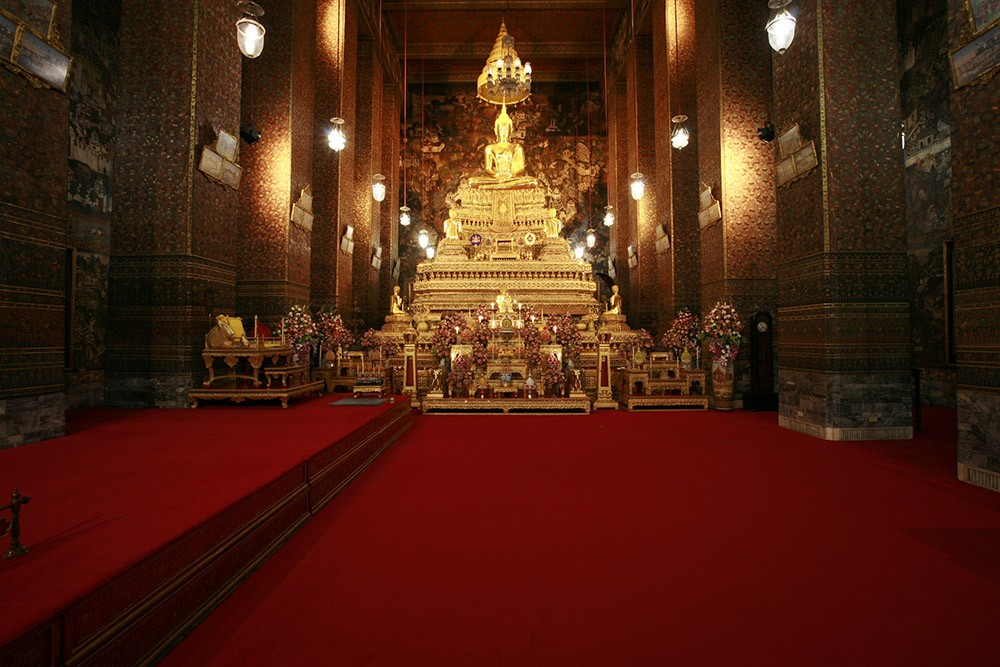

วัดโพธิ์ (Wat Pho)
วัดโพธิ์ หรือ วัดพระเชตุพนวิมลมังคลารามราชวรมหาวิหาร เป็นวัดที่มีชื่อเสียงในกรุงเทพฯ และมีความสำคัญทางศาสนาอย่างยิ่ง เป็นที่รู้จักกันดีในฐานะที่ตั้งของพระนอนขนาดใหญ่ที่สุดในประเทศไทย
ภายในวัดยังมีสถาปัตยกรรมไทยโบราณที่สวยงาม รวมถึงวิหารและเจดีย์ที่ประดับด้วยกระเบื้องสีทอง นอกจากนี้ วัดโพธิ์ยังเป็นสถานที่ที่มีการศึกษาวิชาการแพทย์แผนไทยและการนวดแผนไทยด้วย
← กลับไปหน้าหลัก